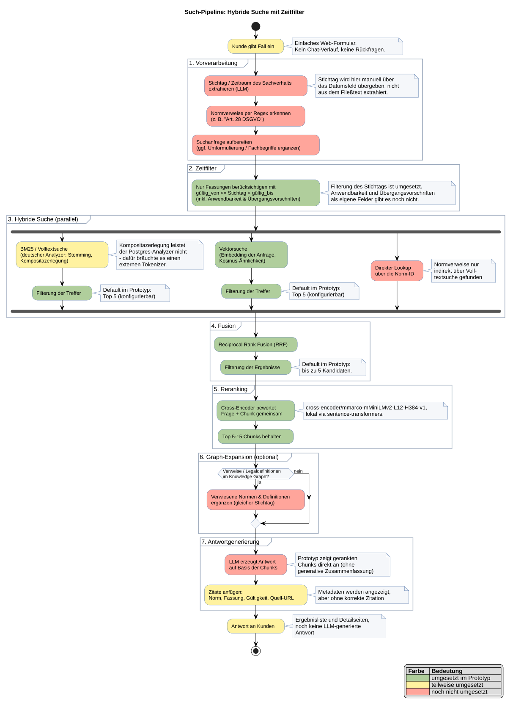

Drei Kernideen
- Speichereinheit ist die einzelne Norm-Fassung mit Gültigkeitszeitraum
daterange; die Datenbank verhindert per Constraint, dass sich zwei Fassungen derselben Norm zeitlich überlappen. - Hybride Suche: Volltext (Postgres
tsvector, deutscher Analyzer) + Vektorsuche (pgvector), kombiniert per Reciprocal Rank Fusion, danach Reranking mit einem Cross-Encoder. - Stichtag-Filterung: die Suche liefert nur die an einem gegebenen Datum gültige Fassung jeder Norm — dieselbe Frage kann je nach Stichtag drei unterschiedliche Antworten liefern.
Architektur
Such-Pipeline mit Zeitfilter, RRF-Fusion und Reranking. Grün markiert, was im Prototyp umgesetzt ist, gelb teilweise, rot noch offen.

Quelle: diagrams/search-pipeline.puml — in der laufenden App wird sie live
gerendert, hier ist sie als statisches SVG eingebettet.
Was schon funktioniert
- pgvector + Postgres-Volltextsuche + RRF + Cross-Encoder-Reranking laufen lokal zusammen, komplett ohne externe API-Keys.
- Der Reranker sortiert einen semantisch nahen, aber juristisch falschen Treffer (Art. 26 statt Art. 28 DSGVO) zuverlässig nach hinten.
daterange+EXCLUDE USING gistfunktioniert wie geplant: überlappende Fassungen werden von der DB abgelehnt.
Offene Punkte für die nächste Ausbaustufe
- Keine separate Regex-Erkennung von Normverweisen; lange natürlichsprachliche Fragen liefern oft 0 Volltext-Treffer (Vektorsuche fängt das ab).
- Kein echter Import gegen EUR-Lex/CELLAR oder rechtsinformationen.bund.de.
- Embedding-/Reranker-Modellwahl wurde nicht gegen ein Evaluationsset (Recall@10) geprüft.
- Keine Graph-Schicht (Verweise, "setzt um", "ändert" zwischen Normen).
Lokal ausprobieren
Repo klonen, dann:
docker compose up -d python3 -m venv .venv && source .venv/bin/activate pip install -r requirements.txt python ingest.py python app.py # http://127.0.0.1:5050
Volle Anleitung, CLI-Beispiele und Testfragen stehen in der README des Repos.
Zum Repository →Hinweis: Die DSGVO/BDSG-Texte in den Beispieldaten sind aus dem Gedächtnis rekonstruiert und nur für diesen Test gedacht — vor echtem Einsatz gegen die Primärquelle (EUR-Lex, gesetze-im-internet.de) prüfen. Das "Beispielgesetz (fiktiv)" ist komplett erfunden und dient nur zum Testen der Zeitraum-Logik.